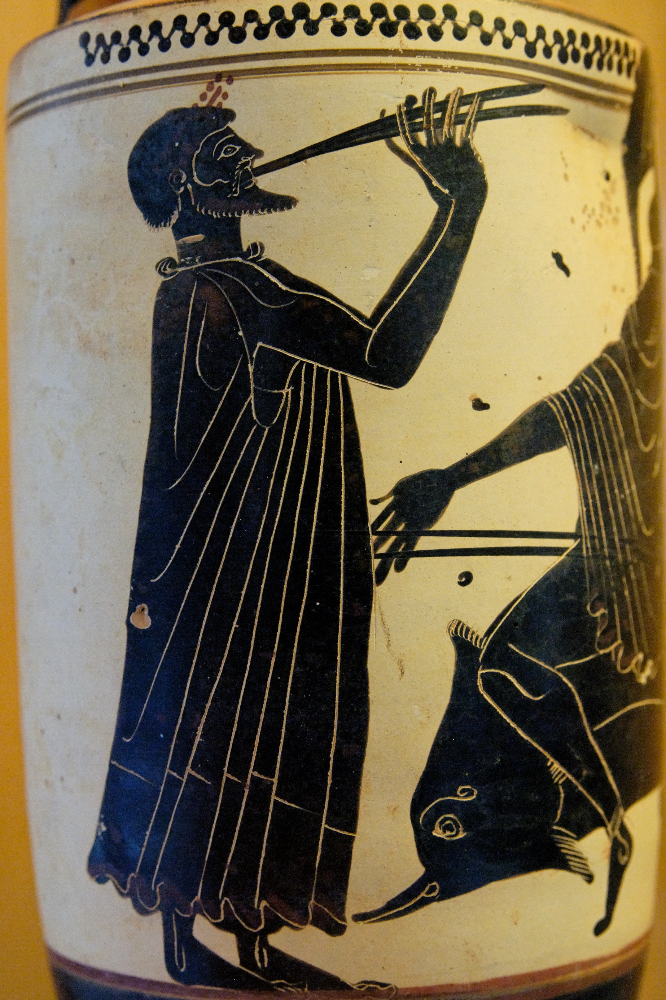
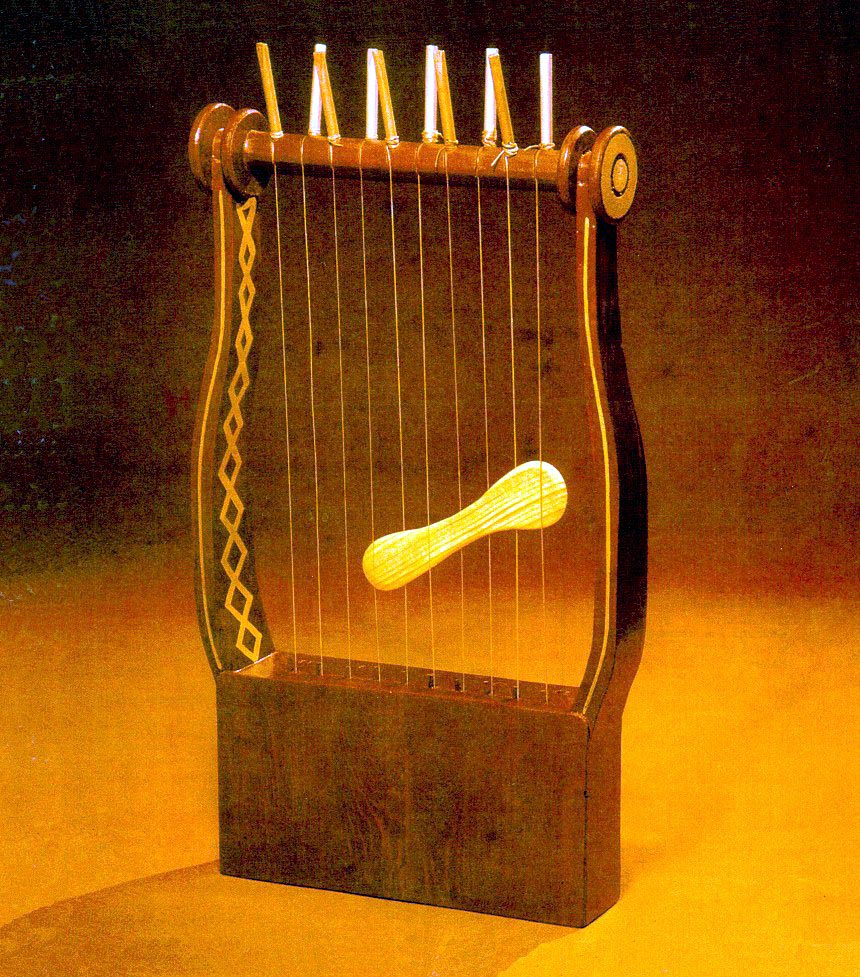
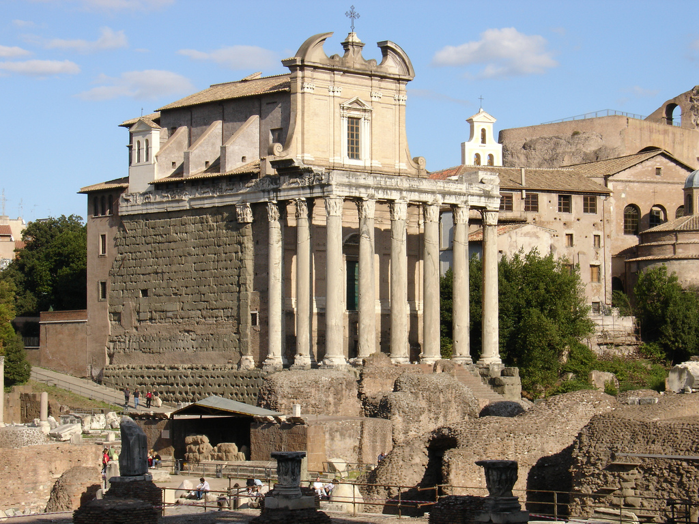
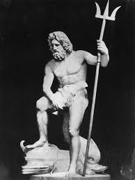
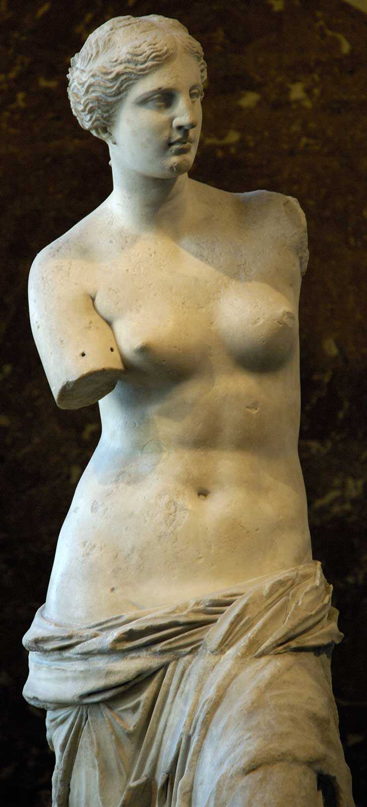
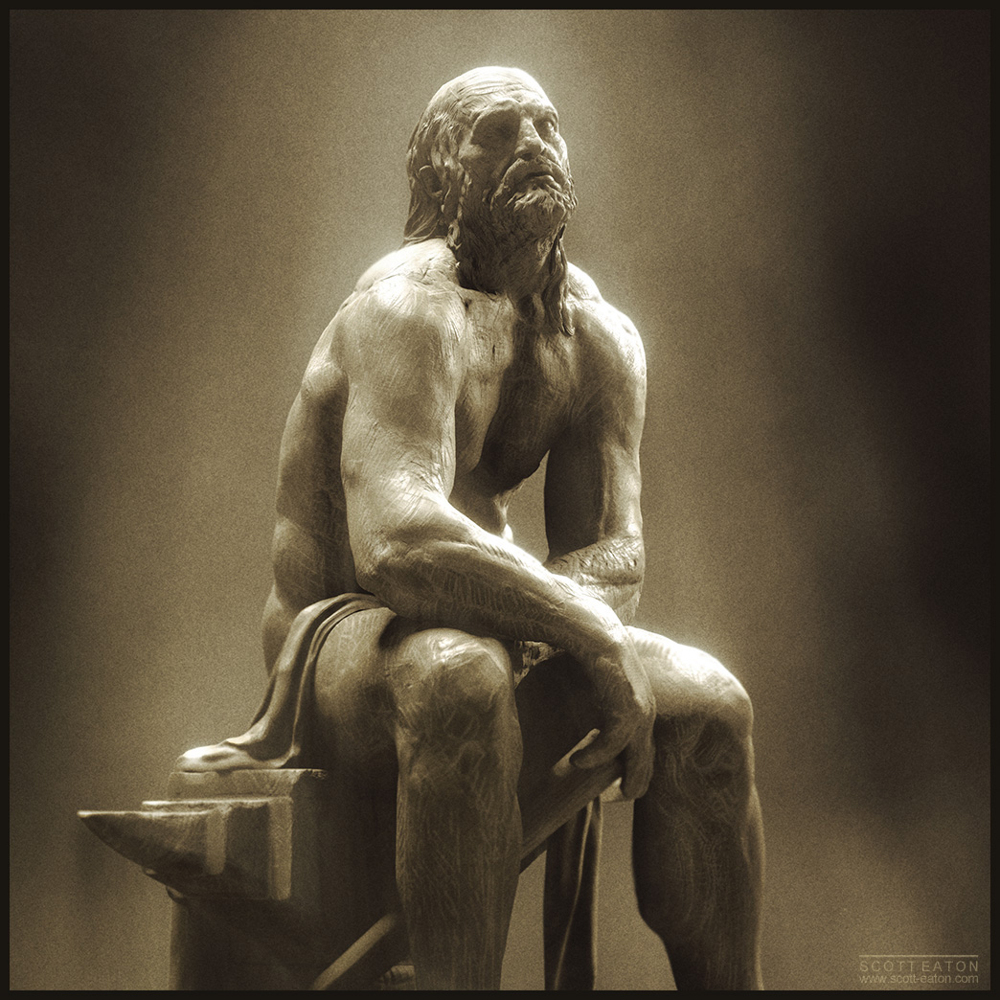
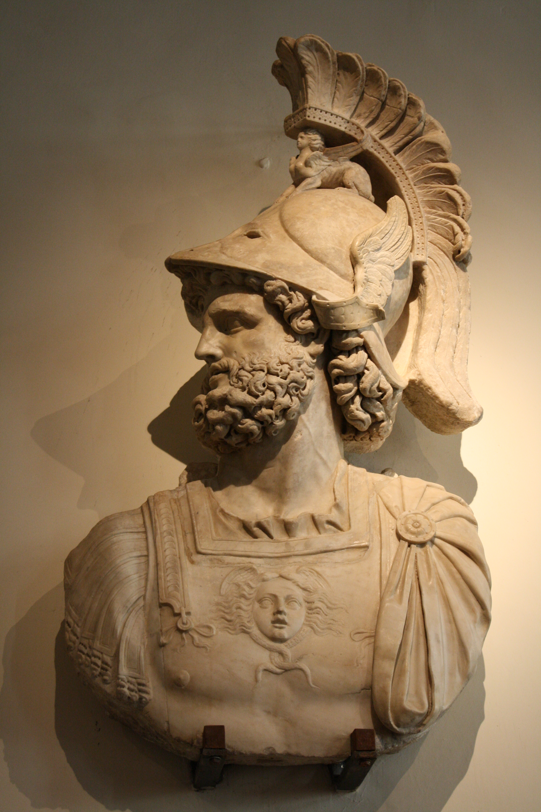
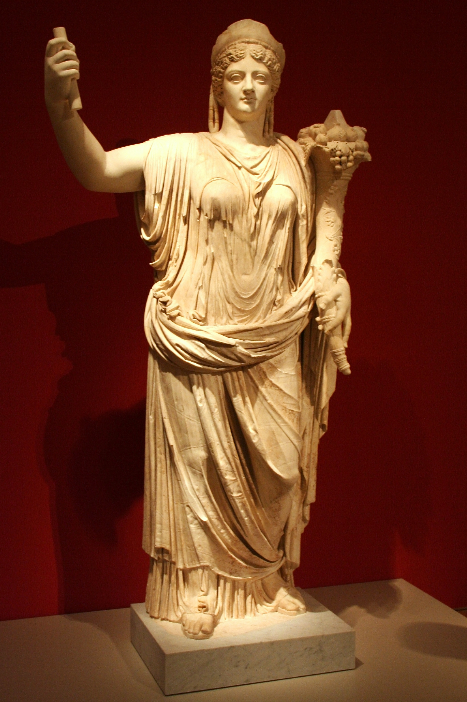
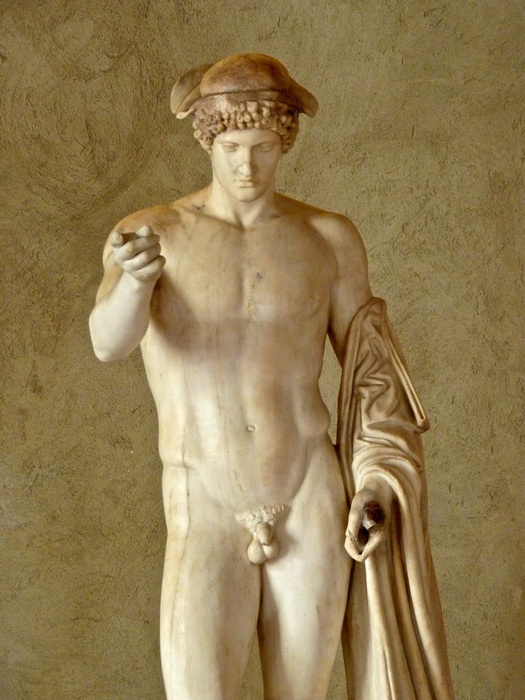
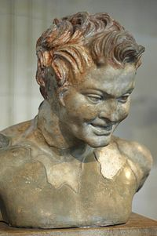

 Tradiţia elenisticà influenţeazã muzica tuturor popoarelor cu care inträ în contact. Mai mult, din momentul în care Grecia devine provincie romanã arta stràmoilor nostri imità practic modelele grecesti. Ca şi în muzica greceascà, monodia rãmâne modul predominant de organizare a discursului muzical. Se pãstreazã aceeaşi notatie, aceleaşi moduri si aceeaşi ritmicà bazatà pe accentele prozodice. Legätura dintre muzicá şi poezie este de altfel sustinutà şi de indiciile potrivit càrora Odele lui Horatiu sau fragmente ale Metamorfozelor lui Ovidiu ar fi fost cântate. O diferenţà faţa de muzica greceascà se observà la nivelul etosului, mai exact în dispariia functiei etice a muzicii, aceasta devenind aproape exclusiv de divertisment. Se pàstreazä instrumentele grecesti, unele având denumiri diferite (spre exemplu: aulos = tibia, syrinx = fistula, salpynx = tuba, tympanon = tympanum, krotala crotala, kymbala cymbala). Lyra si kithara se pàstreazä sub aceeaşi denumire.
 Se dezvoltã foarte mult muzica militarà, cu instrumente specifice: cornu (un instrument în formà de ,,G”, folosit pentru semnale militare, În bàtãlii şi în ceremonjile funerare; este confectionat de obicei din bronz) şi lituus (instrument de origine etruscà, cu un tub conic, incovoiat la capät). Avem multe dovezi, atât în operele literare, cat şi în mozaicurile care impodobeau vilele aristocratilor, ce ne vorbesc despre ansambluri vocale si instrumentale cu mulţi participanti, toate susţinând ideea unei vieti muzicale înfloritoare. Spre deosebire de instrumentiştii greci care erau profesionişti, în Roma Anticä se observà o depreciere a profesionalismului, majoritatea muzicienilor fiind amatori. De asemenea, apare un element constrictiv, având în vedere cà mulţi interpreţi erau sclavi; dreptul de a alege tipul de muzicá aparţinea exclusiv aristocratului, proprietarului.
Peninsula italică înainte de unificarea romană adăpostea populații de origine diversă, între care cei mai importanți erau grecii - din coloniile sudului, latinii - din centru și etruscii de la nord de Tibru. Etruscii sunt, probabil, de origine asiatică. Ei erau vestiți, începând de la sfârșitul Republicii, începutul sec. I î.H., pentru acele libri augurales, interpretări de oracole și, mai ales, haruspicine – ghicirea în măruntaiele jertfei. Nici unul dintre aceste texte nu a ajuns până la noi. Sursele arheologice nu sunt suficiente ca să ne dea o idee satisfăcătoare despre credința etruscilor. Religia romană arhaică se întemeia pe un panteon divin și pe o mitologie puternic înrâurită de mitologia greacă. Georges Dumézil a subliniat existența unei “ideologii tripartite” indo-europene în triada romană Iupiter (care reprezenta suveranitatea), Marte (care reprezenta funcția războinică) și Quirinus (care reprezenta funcția nutritivă și protectoare). Vechiul sacerdoțiu roman cuprinde regele (rex sacrorum), flaminii celor trei zei mari (flamines maiores: flamen Dialis, flamen Martialis și flamen Quirinalis) și marele preot (pontifex maximus), funcție care, începând cu Caesar, va reveni împăratului. Comparată cu iudaismul și confucianismul, religia romană împărtășește, cu primul, interesul pentru evenimentul concret, istoric, iar cu cel de-al doilea - respectul religios pentru tradiție și pentru datoria socială, exprimată prin conceptul de pietas. Roma rezerva altarelor zeităților autohtone un cerc interior făcut din pietre, care se numea pomerium. Locul unde îl venerau pe Mars era situat dincolo de această zonă intimă, unde puterea militară (imperium militiae) nu era tolerată. Zeități mai noi, chiar cele mai importante, cum ar fi Iuno Regina, erau plasate extra pomerium, îndeobște pe colina Aventinului. Excepție face templul lui Castor, instalat în perimetrul pomerial de dictatorul Aulus Postumius, în sec. al V-lea. Divinitățile intrapomeriale arhaice au, deseori, nume, caractere și sărbători bizare: Angerona - zeița echinoxului de primăvară sau Matuta - zeița matroanelor. Străvechea triadă Iupiter-Mars-Quirinus, flancată de zeitățile Ianus Bifrons și Vesta, este înlocuită în perioada Tarquinilor prin noua triadă Iupiter Maximus-Iuno-Minerva. Acești zei, care corespund lui Zeus, Herei și Atenei, au acum statui. Dictatorul Aulus Postumius instituie o nouă triadă pe Aventin: Ceres-Liber-Libera, care corespund lui Demeter, Dionysos și Kore. Romanii încorporau în religia lor culte locale pe măsură ce ocupau teritoriul zeilor vecinilor. Între cele mai celebre este cultul zeiței lunare Diana din Nemi – patroana sclavilor fugari, ce va fi transferat pe Aventin. Cultul domestic consta în sacrificii de animale și în ofrande alimentate și florale adresate strămoșilor și geniului protector al locului. Căsătoria se celebra în căminm, sub auspiciile zeităților feminine Tellus și Ceres. Mai târziu, Iuno a devenit garanta jurământului conjugal. De două ori pe an, orașul sărbătorea culturile morților - Manii și Lemurii, care se reîntorceau pe pământ și se hrăneau cu mâncarea ce le era pusă pe morminte. Din sec. al III-lea î.Hr. romanii ofereau tot mai multe sacrificii zeilor grupați în perechi ale căror statui erau expuse în temple. Sacerdoții romani formau colegiul pontifical, care cuprindea pe rex sacrorum, pe pontifices - cu căpetenia lor, pontifex maximus, pe flamines maiores, în număr de trei, și flamines minores, în număr de doisprezece. Colegiului pontifical i se adăugau șase vestale, având, în momentul alegerii lor, între șase și zece ani, menite unei perioade de treizeci de ani, timp în care trebuiau să-și păstreze virginitatea. În caz de încălcare a acestor reguli erau zidite de vii. O instituție similară e semnalată în imperiul incaș. Sarcina vestalelor era de a păzi focul sacru. Colegiul augural utiliza cărți etrusce (libri haruspicini, libri rituales și libri fulgurales) și grecești (oracole la care au existat contrafaceri evreiești și creștine) pentru a stabili datele faste și nefaste. Existau la Roma și alte grupări religioase specializate, cum erau fețialii, preoții salieni, Frates Arvales – ocrotitori ai ogoarelor, Lupercii (lupa = lupoaică) desemnau sexualitatea dezlănțuită. 
Este zeul luminii și al fenomenelor cerești: vântul, ploaia, tunetul, al furtunii și al fulgerului. Este de proveniență indo-europeană, din Dyaus Pitar sau Părintele zilei la triburile indo-europene (care nu erau altceva decât traci emigrati). La ei DYAUS(ZIUA) era zeul cerului. Il are drept corespondent în mitologia greacă pe Zeus. 
Era cea mai frumoasă zeiță romană, luminoasă și curată ca flacăra focului. Era asociată, la început, cu Ianus Pater și Tellus Mater (Pământul mamă). Proteja semănăturile și era simbolul maternității, deși rămânea veșnic fecioară. Purta întotdeauna văl. O are drept corespondentă în mitologia greacă pe Afrodita. 
Era zeul trăsnetului și al soarelui arzător. Apoi a devenit zeul focului devastator, iar în cele din urmă, zeul focului dătător de viață. Era înfățișat cu barbă, uneori cu o ușoară deformație facială. Însemnele sale erau: ciocanul, cleștele fierarului și nicovala. Purta o bonetă și o scurtă care-i lăsau liber brațul drept. 
Este o divinitate agrară de origine latină. Patrona belșugul, bogăția, abundența. Era propagatorul viței de vie și îngrășătorul ogoarelor. 
Zeiță cunoscută la etrusci și la greci. Minerva era patroana înțelepciunii, a artelor și a meșteșugurilor de tot felul. Împreună cu Jupiter și cu Junona formau o triadă divină. O are corespondentă în mitologia greacă pe Athena. 
Este zeul comerțului și al comercianților, patrona câștigurile dobândite din schimburile negustorești. Avea ca pasăre sfântă cocoșul iar în reprezentări era cu o pungă în mână. 
Este zeitatea animalelor pădurilor, proteja oamenii împotriva lupilor și din această cauză purta numele de Lupercus. Avea drept asociată pe Fauna și Bona Dea (Zâna Bună). Fervoarea religioasă romană crește sensibil în epoca imperială. Caesar și Augustus sunt divinizați după moarte. Deși succesorii lor nu împărtășeau automat același destin, acest fapt a creat un precedent din plin exploatat după aceea, când împărații și intimii săi au fost adesea zeificați încă din timpul vieții. Caesar a inaugurat și cumulul, care va deveni indisolubil, al funcției de imperator și al aceleia de șef religios, pontifex maximus. La fel ca și cultul vechilor zei, cultul imperial își avea preoții și ceremoniile sale proprii. Templele erau consacrate împăraților, fie singuri, fie în asociere cu câte un venerabil antecesor sau cu o zeitate recentă. În sec. al III-lea d.Hr. împărații tind să se identifice zeilor: Septimius Severus și soția sa, Iulia Domna, sunt adorați ca Iupiter și Iunona. Cultul imperial este o inovație care marchează sfârșitul religiei romane tradiționale, constituind etapa desuetă a sa. Mircea Eliade afirma că dacă în epocă există ceva viu cu adevărat, apoi acestea sunt sintezele intelectuale elenistice, pe de o parte, și misterele, pe de alta. Pentru a frâna răspândirea masivă a creștinismului, scriitorii păgâni recurseseră la vechile mituri platonice, conferindu-le, astfel, un puternic simbolism. Celsus în sec. al III-lea, Porfir în sec. al II-lea, împăratul Iulian, Partidul “păgân” al lui Symmachus și platonicienii Macrobius și Servius, la sfârșitul sec. al IV-lea, vor opune totalitarismului creștin o viziune religioasă pluralistă, străduindu-se să înglobeze și să recupereze toate credințele trecutului, chiar și acelea care, la prima vedere, repugnau rațiunii. Elita romană se va mai hrăni din aceste credințe până la căderea Imperiului, după care acestea își vor continua existența lor subterană în Bizanț. 